Sediment Transport and Morphological Change¶
NUMERICAL SCHEME
- Sed_Scheme: numerical scheme for solving the advection-diffusion equation
- Sed_Scheme = TVD: TVD scheme
- Sed_Scheme = Upwinding: Upwinding scheme (defalt)
SEDIMENT PARAMETERS
- D50: median grain diameter 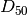, defalt 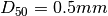
- Sdensity: gravity of sediment
 , defalt
, defalt - n_porosity: porosity of sediment
 , defalt 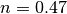
, defalt 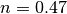 - WS: settling velocity
 , defalt 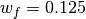 m/s
, defalt 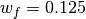 m/s - Shields_cr: critical Shields parameter
 , defalt 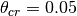
, defalt 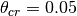 - Kappa1: Runge-Kutta parameter 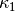, defalt 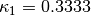, 4th-order
- Kappa2: Runge-Kutta parameter
 , defalt 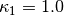, 4th-order
, defalt 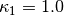, 4th-order - PLOT_INTV_SEDIMENT: time interval for plotting sediment transport variables, defalt is the same as the Boussinesq model
MORPHOLOGICAL CHANGE
- Bed_Change: logical parameter, T: update depth, F: no bed change.
- Hard_bottom: logical parameter, T: hard bed, no erosion allowed, F: sediment bed
- Hard_bottom_file: the file contains the distribution of hard bed points (0:hard bed, 1: sediment bed). The format is the same as the depth file
- Morph_step: ratio of Boussinesq model time step to the morphological updating step, 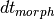, defalt: = 25
AVALANCHE
- Avalanche: logical parameter, T: consider avalanche, F: not consider avalanche
- Tan_phi: tangent of the repose angle 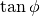, defalt 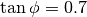, or 35 deg